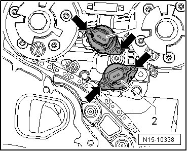

Camshaft Adjuster Valves
Camshaft Adjuster Valves
Special tools, testers and auxiliary items required
• Torque wrench (V.A.G 1783)
• Torx bit assortment (V.A.G 1766)
• Ratchet 1/4" (VAS 6234)
• Socket Wrench (T10072)
• Sealant (D 176 501 A1)
Removing
Requirements
• Engine must be removed.
- Remove cylinder head cover --> [ Cylinder Head Cover ] Cylinder Head Cover.
• Before disconnecting harness connectors, mark allocation to component.
- On the following components, pull off the covers for the connectors:
• Camshaft adjustment valve 1 (N205)
• Camshaft adjustment valve 1 (exhaust) (N318)
• Camshaft Position (CMP) sensor (G40)
• Camshaft position (CMP) sensor 2 (G163)
- Free up the wiring harness.
- Remove only the thermostat housing --> [ Cooling System Components, Engine Side, Assembly Overview ] Cooling System Components, Engine Side, Assembly Overview.
• The cover has a "hidden bolt". It can be removed only after the thermostat housing has been removed.
- Remove camshaft roller chain tensioner - arrow -.

- Remove mounting bolts - arrows - from cover.

- When all securing bolts have been removed, cover can be carefully pried off.
CAUTION!
• Carefully cover lower chain compartment so no parts can fall in.
• Do not completely remove camshaft adjustment valve securing bolts so that valve is not tilted when removed.
- Loosen camshaft adjustment valve securing bolts approximately 3 mm (5 turns) - arrows - using socket wrench (T10072).

- Pull camshaft adjustment valve out of seal seat in control housing against loosened bolts.
- Completely remove securing bolts and remove camshaft adjustment valve from control housing.
Installing
CAUTION!
• The valve seat in the control housing must not be scored or scratched.
• The camshaft adjustment valves and control housing must be free of dust and contamination.
• The camshaft adjustment valves must not be subjected to knocks or impacts.
• Only remove new camshaft adjustment valve from packaging right before installation.
• Camshaft adjustment valves must not be pulled into valve seat by securing bolts. Only press them in by hand.
- Coat sealing rings with clean engine oil.
- Carefully insert camshaft adjustment valve into housing and press it perpendicular to valve axle in by hand until it stops.
- Tighten the mounting bolts - arrows - to 3.8 Nm.
- 1 - camshaft adjustment valve 1 (N205) connector color: black.
- 2 - camshaft adjustment valve 1 (exhaust) (N318) connector color: brown.
- Clean sealing surface on cover as well as on cylinder head.
- If sealing rings in cover are to be replaced:
- Lubricate oil channel seal O-ring --> [ (Item 15) O-ring ] Cylinder Head Cover, Assembly Overview and insert in cover.
- Insert sealing ring --> [ (Item 12) Seal ] Cylinder Head Cover, Assembly Overview in cover.
- Clean old sealing compound from the 3 mm holes in the cylinder head gasket - arrows -.

- Fill 3 mm holes in cylinder head gasket with sealant (D 176 501 A1) and coat sealing surface on cover and sealing flange with sealant (D 176 501 A1).
• With the cylinder head installed only half of the holes in the cylinder head gasket are visible.
- Install cover as quickly as possible.
- First install all mounting bolts - arrows - and tighten lightly.
- Then tighten the M8 bolts --> [ (Item 11) 23 Nm ] Cylinder Head Cover, Assembly Overview to 23 Nm and tighten the M6 bolts --> [ (Item 7) 8 Nm ] Cylinder Head Cover, Assembly Overview to 8 Nm.
- Install the camshaft roller chain tensioner--> [ (Item 5) Chain tensioner, 40 Nm ] Cylinder Head Cover, Assembly Overview and tighten it to 40 Nm.
- Install cylinder head cover --> [ Cylinder Head Cover ] Cylinder Head Cover, and intake manifold.
The rest of the assembly is basically a reverse of the disassembling sequence.